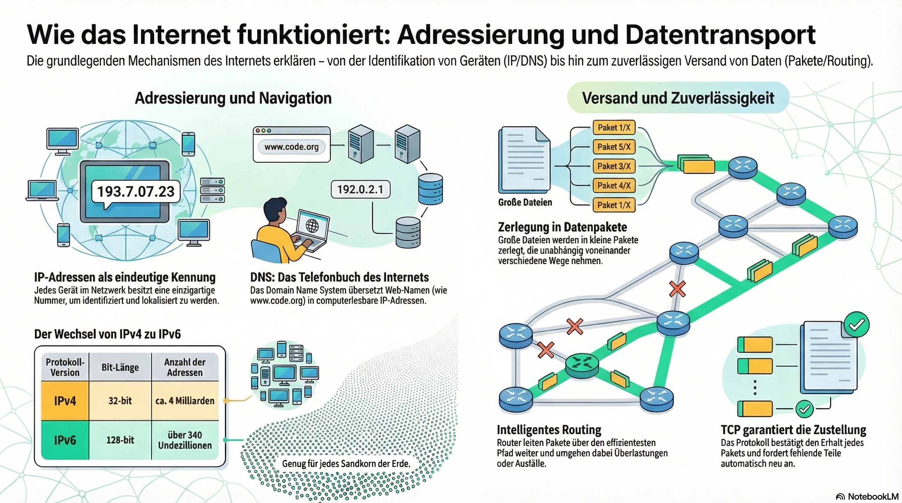

Studiere die Infografik, lies dir die Erklärungen durch und probiere die Befehle in den Terminals aus. Am Ende absolvierst du den Security-Check (Quiz). Zeige Prof. Schweitzer am Ende der Stunde dein generiertes Cyber-Zertifikat am Bildschirm!

Die grundlegenden Mechanismen des Internets auf einen Blick.
Einheit 1: Adressierung (Das Telefonbuch des Webs)
Jedes Gerät im Netzwerk benötigt eine eindeutige Kennung (IP-Adresse), um identifiziert und lokalisiert zu werden. Wenn du www.code.org in deinen Browser eintippst, weiß dein Computer absolut nicht, wo das liegt.
Deshalb gibt es das DNS (Domain Name System). Das ist das Telefonbuch des Internets. Es übersetzt Web-Namen in computerlesbare IP-Adressen (z.B. 192.0.2.1).
Der Wechsel von IPv4 zu IPv6
Lange Zeit nutzte das Internet den Standard IPv4. Weil heute aber fast jeder Mensch ein Smartphone, einen Laptop und vielleicht sogar einen smarten Kühlschrank besitzt, gehen uns die Adressen schlichtweg aus! Die Lösung heißt IPv6.
| Protokoll-Version | Bit-Länge | Anzahl der Adressen |
|---|---|---|
| IPv4 (Der alte Standard) | 32-bit | ca. 4 Milliarden |
| IPv6 (Der neue Standard) | 128-bit | über 340 Undezillionen (Genug für jedes Sandkorn der Erde!) |
Schau dir dieses kurze Video von Code.org an (englischer Ton, deutsche Untertitel aktivierbar), um das Konzept im Detail zu verstehen.
💻 Terminal-Labor: Spiele den DNS-Server
Finde heraus, welche IP-Adresse hinter bekannten Webseiten steckt! Tippe den Befehl ping name-der-website.at in das Terminal ein und drücke Enter.
Beispiele zum Testen: google.com, orf.at, netflix.com, schule.at
Einheit 2: Paketvermittlung & Zuverlässigkeit
Das Internet verschickt große Dateien niemals am Stück. Es nutzt das Prinzip der Zerlegung in Datenpakete. Diese kleinen Pakete können völlig unabhängig voneinander verschiedene Wege durch das Netzwerk nehmen.
- Intelligentes Routing: Router sind die Postämter im Internet. Sie leiten Pakete immer über den effizientesten Pfad weiter und können dabei Netzwerk-Überlastungen oder defekte Kabel (Ausfälle) dynamisch umgehen.
- TCP (Transmission Control Protocol) garantiert die Zustellung: Am Zielort kommt TCP ins Spiel. Das Protokoll bestätigt den Erhalt jedes Pakets. Wenn ein Paket (z.B. Paket 2/X) unterwegs verloren geht, merkt TCP das und fordert fehlende Teile automatisch neu an.
Wie finden die Datenpakete ihren Weg durch das Chaos der weltweiten Kabel und Router?
💻 Terminal-Labor: Verfolge ein Datenpaket
Mit dem Befehl traceroute können wir jeden einzelnen Router (Knotenpunkt) auf der Welt sichtbar machen, den unser Datenpaket passiert, um zum Ziel zu kommen. Tippe z.B. traceroute orf.at ein.
Der Security-Check (Wissenstest)
Löse die 6 Fragen, um zu beweisen, dass du die Infrastruktur des Internets verstanden hast.
1. Welche Aufgabe hat das DNS (Domain Name System)?
2. Warum wechselt das Internet derzeit vom alten IPv4 auf den IPv6 Standard?
3. Wie werden Daten (z.B. große Bilder) im Internet transportiert?
4. Was macht ein Router beim sogenannten "Intelligenten Routing"?
5. Was passiert, wenn auf dem Weg ein Kabel reißt oder ein Knotenpunkt ausfällt?
6. Wofür ist das Protokoll "TCP" zuständig?
Abschluss-Zertifikat
Hast du alle 6 Fragen richtig beantwortet? Dann hol dir jetzt dein Zertifikat!
NETZWERK-TECHNIKER/IN
Modul: TCP/IP & DNS (100 Min)
Zeit:
Hash:
Bitte zeige diesen Bildschirm jetzt Prof. Schweitzer.